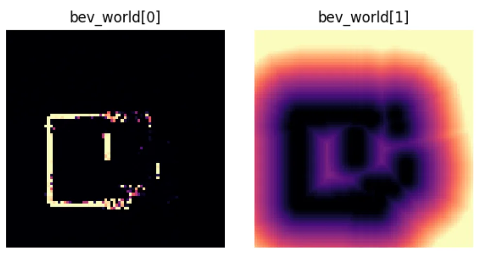
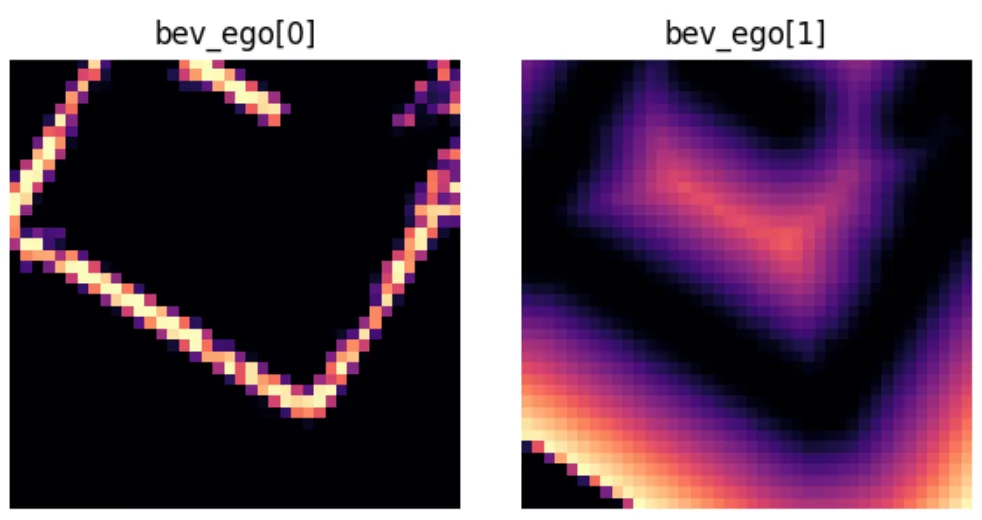
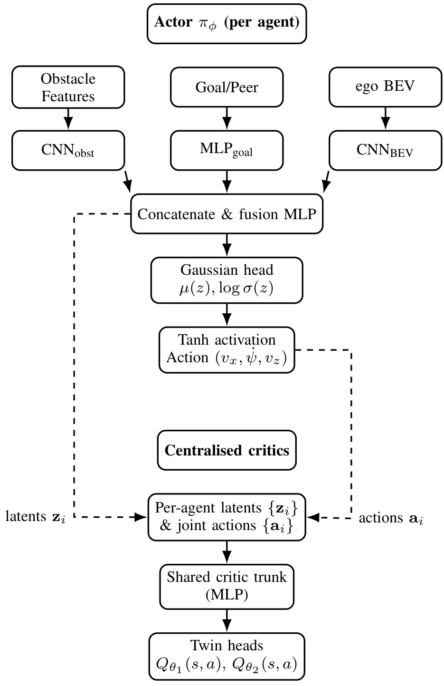
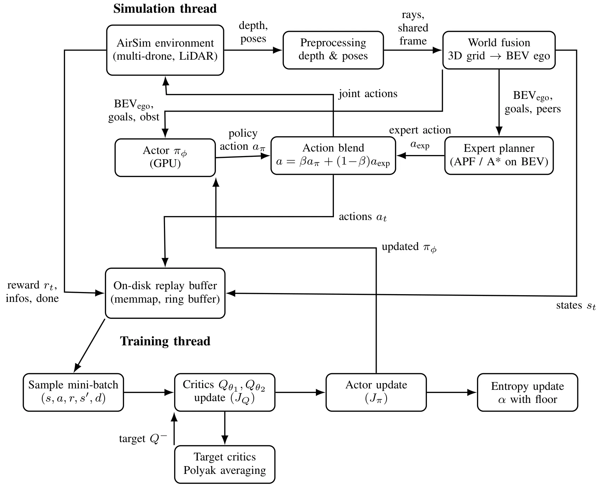
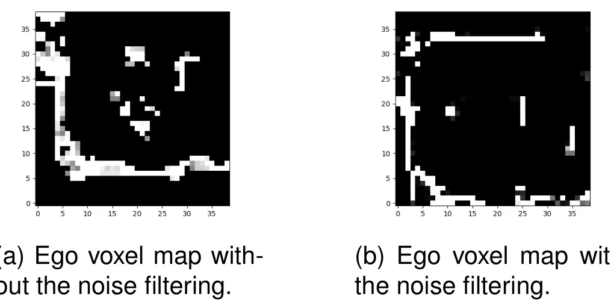
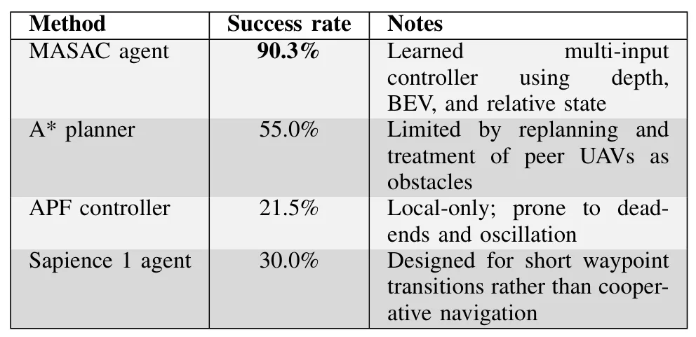

基于共享体素地图与多智能体 SAC 的室内无人机协同导航Shared Voxel-Map-Based Cooperative Indoor UAV Guidance with a Multi-Agent Soft Actor-Critic Controller
共享地图表示与多机无 GNSS 导航直接相关，兼有仿真对比和真实双机演示；定位来源、跨机标定、通信延迟及更多 agent 的扩展仍不清楚。
一句话工作总结
多机 LiDAR 在世界坐标系融合共享 voxel map，各机从自我对齐 BEV crop 分散控制，并在无 GNSS 室内完成双机实验。
摘要
该系统将多架无人机的 360° LiDAR observations 融合到共享 world-frame occupancy voxel map，再转换成紧凑 BEV representation，并向每个 agent 提供 ego-aligned local crop，形成 integrate-in-world、act-in-ego 的空间融合与 decentralized control。策略在 centralized-training/decentralized-execution 框架中组合 BEV map features、近场障碍观测、目标和 peer states。仿真 corridor navigation success rate 达 90.3%，优于 A*、artificial potential field 和先前 guidance method；随后用真实数据 offline imitation fine-tuning 缓解 sim-to-real mismatch，并在 GNSS-denied 室内环境展示双无人机稳定协同。
This paper presents a cooperative indoor UAV guidance framework that combines a shared voxel-map world model with a multi-agent Soft Actor-Critic (MASAC) controller. Multiple drones fuse 360 LiDAR observations into a common world-frame occupancy map, which is converted into a compact bird's-eye-view (BEV) representation and provided to each agent as an ego-aligned local crop. This integrate-in-world, act-in- ego design enables consistent multi-UAV spatial fusion whilst retaining decentralised continuous control. The policy combines BEV map features, near-field obstacle observations, and compact goal and peer-state information within a centralised-training, decentralised-execution framework. In simulation, the learned controller achieves a 90.3% success rate in corridor navigation, outperforming Astar planning, an artificial potential field controller, and a prior guidance method. To address residual sim-to-real mismatch, the simulation-trained policy is further adapted using offline imitation fine-tuning from real-world data. Real-world experiments in GNSS-denied indoor environments demonstrate stable two-UAV cooperative operation across increasingly chal- lenging obstacle layouts. The results show that shared voxel-map representations provide an effective and scalable spatial substrate for learned cooperative indoor UAV guidance.
中文解读摘录
- 作者：Thomas Hickling, Dylan Wynne, Yu Su, Nabil Aouf
- 价值判断：采用“integrate in world, act in ego”，将多机 360° LiDAR 观测融合到共享 world-frame voxel map，再向每个 agent 提供 ego-aligned BEV crop。
- 结果与边界：仿真 corridor navigation success rate 为 90.3%，并以真实数据 offline imitation fine-tuning 缓解 sim-to-real gap；真实 GNSS-denied 环境仅展示双机，地图通信、时间同步、漂移累积和规模扩展仍需核查。
- 链接：arXiv · PDF
图表/页面预览

{kind=link}

{kind=link}

{kind=link}

{kind=link}

{kind=link}

{kind=link}
